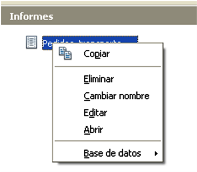
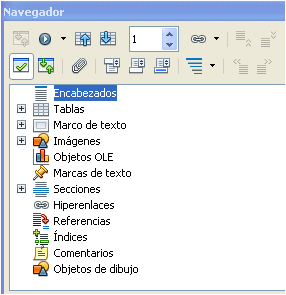
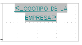
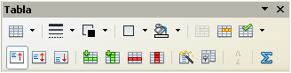
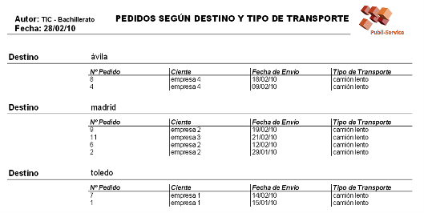

Tecnología de la Información y la Comunicación: Bases de datos
4.3.2. Edición
|

|
| Editar informe |
Es más útil y rápido, si el resultado no es el requerido, crear un nuevo informe con el asistente.
Generalmente un informe se edita para modificar cualquiera de sus elementos visuales: márgenes, encabezamientos, pies de página, inserción de imágenes, etc.
|
Navegador del informe.- La vista de edición permite activar los elementos del informe mediante el navegador del informe. Observa que es distinto al navegador del formulario, ya que contiene todos los objetos específicos del informe
Es muy útil moverse al encabezado o al pie para editarlo mediante los botones de este menú. |

Navegador de informe
|
|
|
Activa la barra de herramientas de dibujo, entre las que se encuentran la de inserción de texto y de imágenes.
Si el modelo de informe ya incluye imágenes, se insertan directamente en el espacio destinado a ello. |
 Campo de inserción de imagen |
|
| En el informe se pueden insertar tablas para introducir texto, pero la acción más común es editar la tabla que contiene los datos del informe haciendo doble clic en la zona de datos y abriendo el menú de tabla. Mediante este menú se cambia el tamaño de las columnas, de las filas, ... |
 Barra de herramientas de tabla |
Caso práctico
Demasiados botones, barras de herramientas y opciones. Parece complicado manejarlo todo, pero la realidad es que el diseño realizado con el asistente suele disponer los elementos en la pantalla adecuada.
Las acciones más comunes suelen ser las de insertar un título o alguna anotación aclarativa, insertar imágenes como el logo de la empresa o modificar el tamaño de alguna columna.
Y este es el resultado.

Informe Pedidos_transporte con logo y título
Para saber más
Para mejorar aún más el aspecto del informe modifica el pie de página incluyendo los datos de la empresa.
Pie de informe personalizado